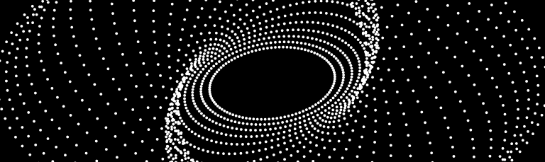

Software¶

Hardware interfacing¶
Vernier¶
Logger Pro¶
Liquid instruments¶
Moku:Go¶
The software for the Moku:Go is available for download on the manufacturer's website, but can also be downloaded directly below:
Moku:Lab¶
Narwhal devices¶
Pulse recorder¶
Pico Technology¶
The software required for to interface with the Pico Technology ADC20 and 2000 can be downloaded on the manufacturer's website, but can also be downloaded directly below:
ADC20¶
PicoScope 2000¶
Spectrum Techniques¶
UCS30¶
Thorlabs¶
AFM¶
Cameras¶
Analysis¶
Gwyddion¶
For greyscale image analysis and data visualisation, especially images from a scanning microscope, the open-source project Gwyddion can be extremely useful and can be downloaded below:
HDFView¶
To open and view HDF files, one can use HDFView - the most recent version can be downloaded from the HDF Group's website - which can be downloaded below
Last update: July 15, 2022